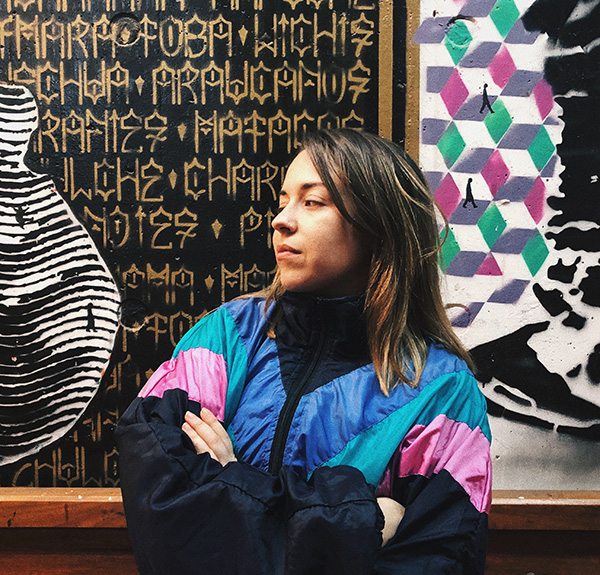

About

I enjoy working collaboratively. I'm always open to receive feedback from my colleagues, and willing to help and share my knowledge with others in a kind and positive way. I like finding new ways to optimize creative processes and production, as well as I enjoy iterating them to improve them.
I am passionate about details and neatness, especially in areas such as information organization, type combination, editorial design, brand application, and developing brand identities and visual systems. The visual stimuli of daily life inspire me, I enjoy working with them.
I am currently part of the Marketing and Communications team at Aracar Group, a fintech startup located in Vicente López, Buenos Aires. My role as Graphic Designer includes tasks as producing internal and external communication assets (such as graphics, videos, animations, slideshows, prints, signage, etc.), developing content for digital marketing and out of home advertising campaigns (for social media, mailing, etc), community managing, negotiating with suppliers, etc.
I'm open to relocation. I am a EU citizen.